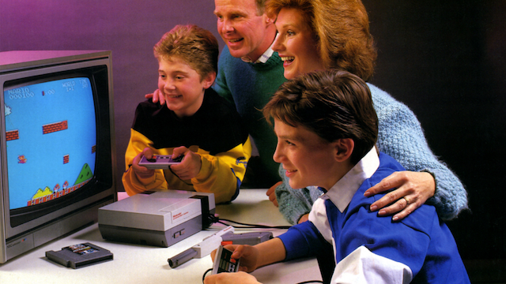
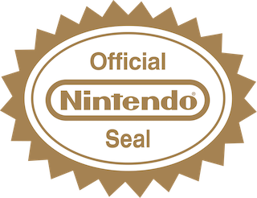
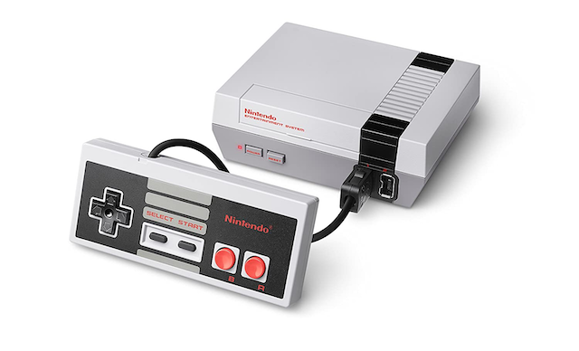

The Crash of 1983 is infamous for the failures of the American video game industry, but not many know who revived the industry. The Golden Age did not last for long as the video game industry came to a crash in 1983. The crash resulted from many failures, such as an oversaturated market, lack of publishing control, and low consumer confidence due to low–quality games. With the lack of Atari’s leadership in NA for video games during the crash, Nintendo announced the Advanced Video Entertainment System(AVS) release. Through the success of NES and the positive reputation of Nintendo, it regained the confidence of the retailers and consumers, which rescued the American video game industry. Nintendo saved the American Video Game Industry after the Crash by implementing efficient marketing strategies, redesigning the NES, which revolutionized the industry, and introducing the 10NES lockout chip, which prevented the use of third-party cartridges.
Nintendo Entertainment System effectively utilized the marketing campaigns to re–image their product as something more than a video game console. Another way NES advertised its product was through slogans, one of the famous being, "Now you’re playing with power!" There were plenty of those ads aired on Tv which were popularized with movie collaborations, such as Alien and Terminator. Through catchy slogans, Nintendo created a hub of recognition and engagement for video games. That is how NES was successfully able to change the perception of consumers and retailers with marketing campaigns that built trust and reframed the damaged North American video game industry after the crash of 1983
The last effective strategy used by Nintendo in the NES to boost off the North American video game market after the crash of 1983 was the introduction of the Nintendo seal and 10NES lockout chip. One could argue that the crash of 1983 would have been prevented if the big companies such as Atari had implemented a strategy to limit third–party developers with a similar chip like 10NES. With the knowledge of the recent crash due to uncontrolled third–party developers, Nintendo avoided the same fate by introducing the 10NES chip and "Seal of Quality." The lockout chip worked by preventing unlicensed or pirated game cartridges from running on NES. The chip was located in the cartridge and was different throughout regions. So, therefore, third–party developers had to pay licensing fees to use the games; this became an excellent revenue for Nintendo. Therefore the quality and quantity of the video games were finally controlled by the company itself, which improved consumer confidence and satisfaction. That’s how Nintendo helped rebuild the North American gaming industry after the crash through the limitation of third–party video games.
Therefore Nintendo singlehandedly rebuilt the slowly disappearing North American video gaming industry after the crash with the introduction of NES. NES became the best–selling gaming console after the crash because Nintendo invested tremendous resources in the marketing campaigns to re–image its product as something more than a video game. NES’s revolutionary redesign included exciting accessories, and lastly, they introduced a 10NES chip with a Nintendo seal that helped limit third–party games influencing the market. Nintendo not only helped revive the industry, but it also set new standards with the release of NES. Those Standards would prevent a similar crash from taking place in the future. Nintendo became more significant than a gaming console; it became part of many kids’ sweet childhood memories with famous characters such as Mario. Now those kids have grown to adulthood but still associate themselves with Nintendo’s legacy and the fandom.
